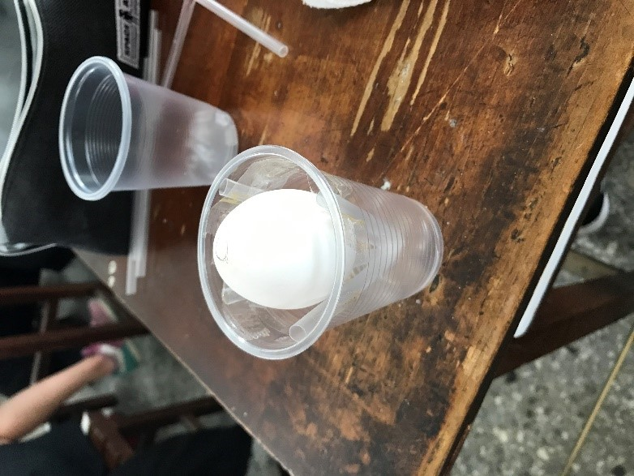
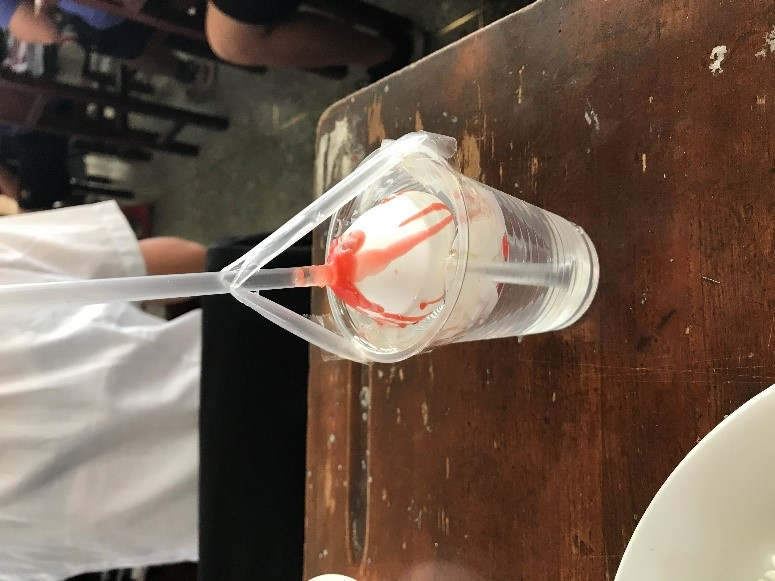

蛋膜實驗
實驗器材:
1.生雞蛋一顆 2.美工刀一把
3.紅蠟燭一根 4.打火機一個
5.剪刀一隻 6.透明吸管七支
7.膠帶與膠帶台 8.透明塑膠杯一個
實驗步驟:
1.首先在雞蛋頂端畫出一支吸管粗的圓圈，並在底端畫出一個50元大小的園，結束之後使用兩根吸管以
十字的方式固定在杯子底部當作支架。(如下圖左)
2.再來就是最有挑戰的部分了，先將雞蛋鈍端50圓大小的圓敲出裂痕，在使用美工刀以平持的方式慢慢將
蛋殼除去(記得儘量不要將蛋膜用破)，完整除去後仔細檢查是否有小破洞，如果有可用蠟油稍微修補。
接著在雞蛋尖端，製造一個吸管大小的洞，等等使吸管可以進出，做完之後將吸管放入至底端上方約
0.5公分處，並用蠟油將雞蛋與吸管緊密的封在一起(蠟油乾了之後注意不要在使其移動)，使兩者間沒有空隙。
3.上述都完成後，試著吸看看吸管，若液面上升則算完成一半了，注意在吸的時候不要吸太大力，以免造成
吸管移動或將蛋液吸入口腔內。
4.接著將兩根吸管相接，並用膠帶固定雞蛋吸管上方，為等等容納液體的管道。另外拿兩支吸管擺成十字
固定在雞蛋上方，作為支撐用。這大致上即為實驗流程。(下圖右)
實驗心得:
整個實驗的精華就在剝蛋殼的時候，由別以往的經驗，這次不能將蛋膜也剝掉否則就只能重剝一顆，就向
班上有許多人都剝了兩顆以上，在剝的時候需要非常大的耐心與細心，最好是完全都沒有漏洞，這樣實驗就能
較完美，不然也可使用 蠟燭小心修補，但是實驗結果將會比較差一點(上升速度緩慢)。在將吸管固定在雞蛋時
也是一種考驗，這非常考驗技術，而且也不能太貪心，如果一次滴太多，會造成被包在內部的蠟油還沒乾，表
面就已經乾了的窘境。做完這次實驗後，我更加理解了滲透壓進行的過程，以及在做實驗時須具備的態度，想
要有個完美的結果，就必須先付出等價或更多的努力與精力，才能達到自己所要的結果。
圖片:

